作者备注：本教程适合初学者，如您不想浪费时间，请点击这段话跳转
下载一个minecraft java版启动器，这里比较推荐pcl2
pcl2蓝奏云下载链接 点击下载下载后解压到一个文件夹中，并点击里面的“Plain Craft Launcher 2.exe”
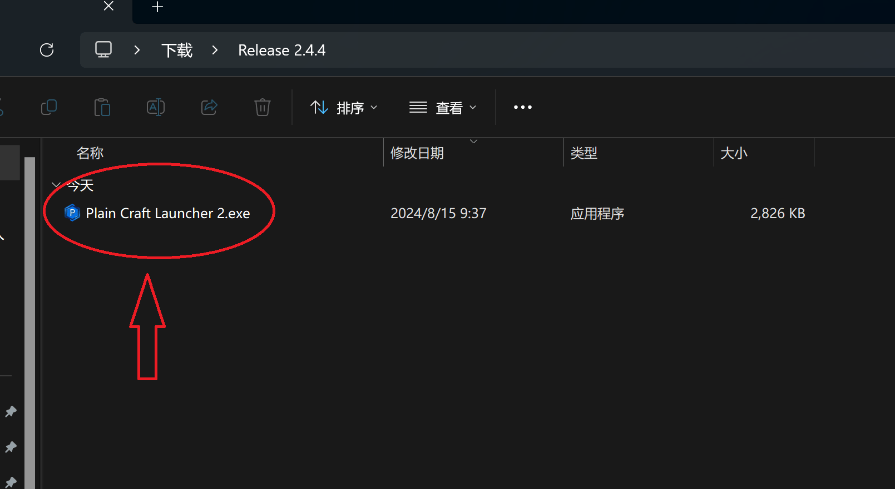等待它自动更新，完成后你就能看到下图这样的界面。如果你有正版账号，可以直接登录。
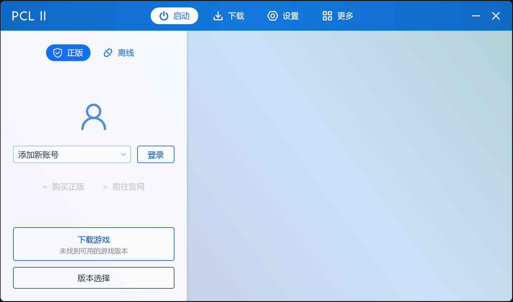要是没有也可以，点击上面的离线登陆
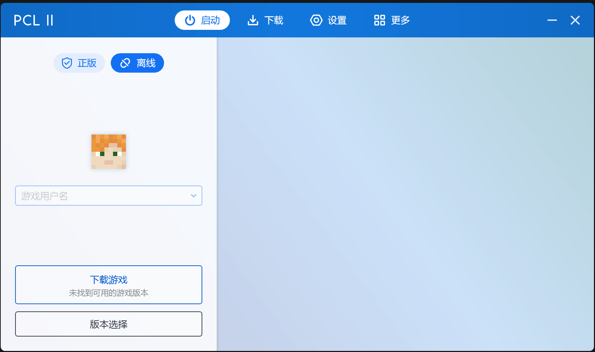输入一个你喜欢的名字
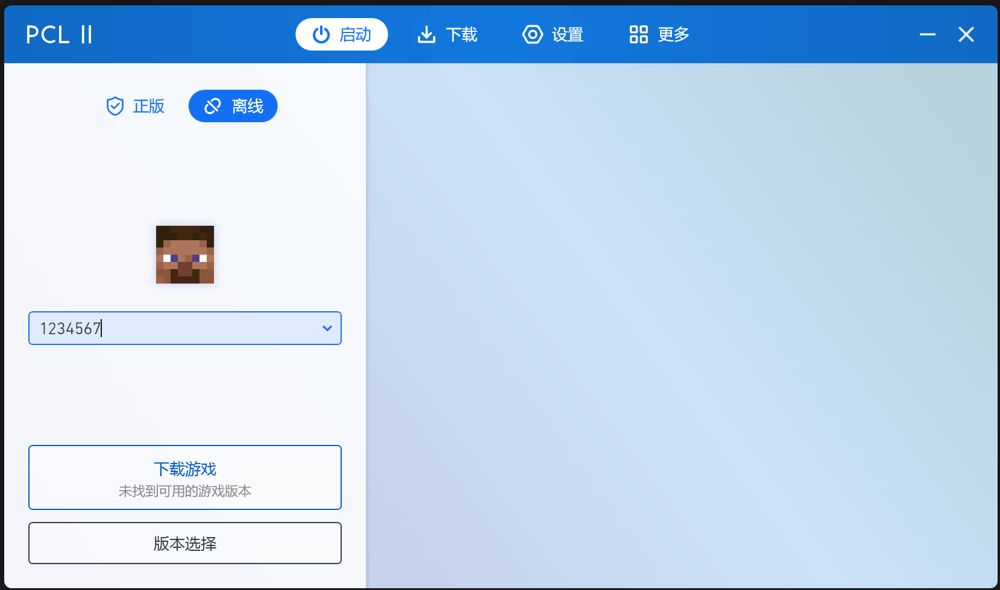点击上图主页左下角的下载游戏，进入下载界面
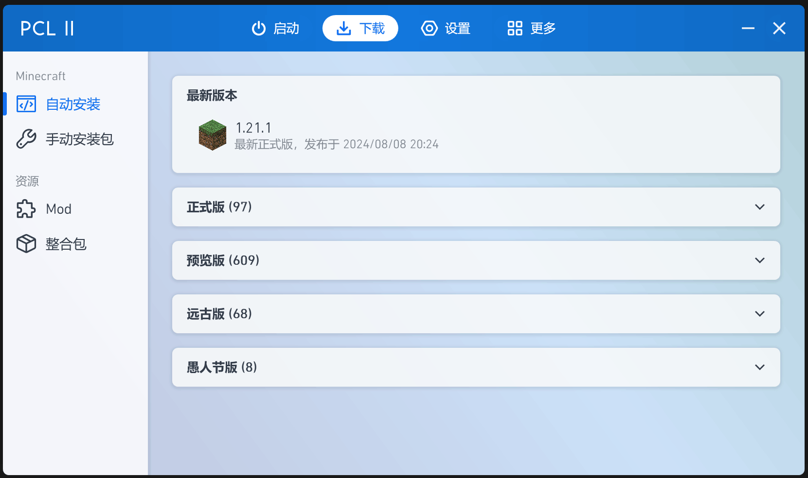点击正式版，找到1.18.2版本
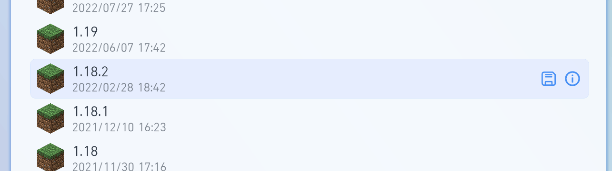进入它的下载设置界面，如果你想在后面使用模组，可以选择forge或fabric，如果你喜欢纯原版，那什么都不要动
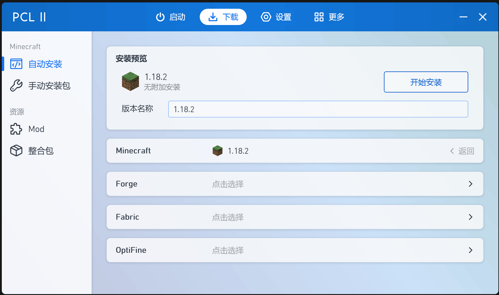点击下载，你就可以开始等待了（它也许会提示你打开版本隔离，有的尽量打开）
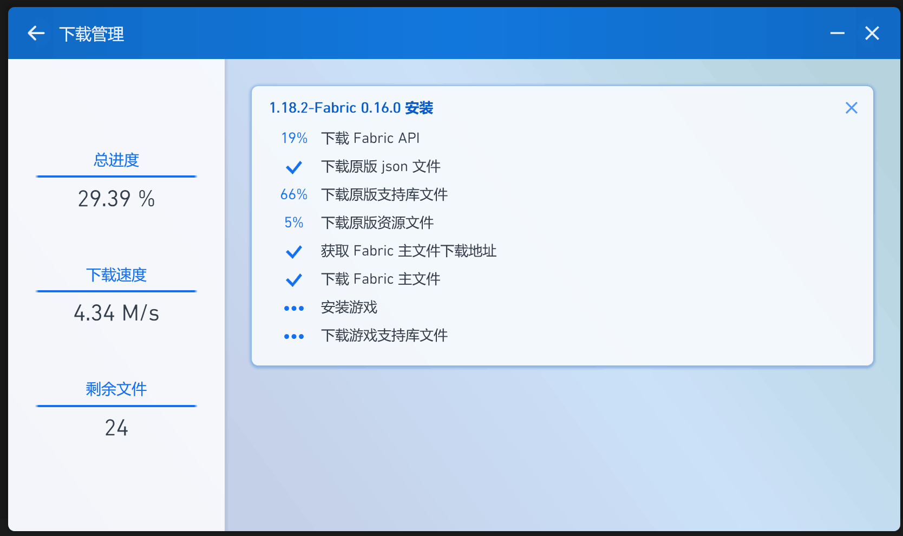如果你安装了模组加载器，可以点击上方的下载，进入资源下的Mod。你可以使用条件筛选器，找到适合你的仅客户端模组并安装
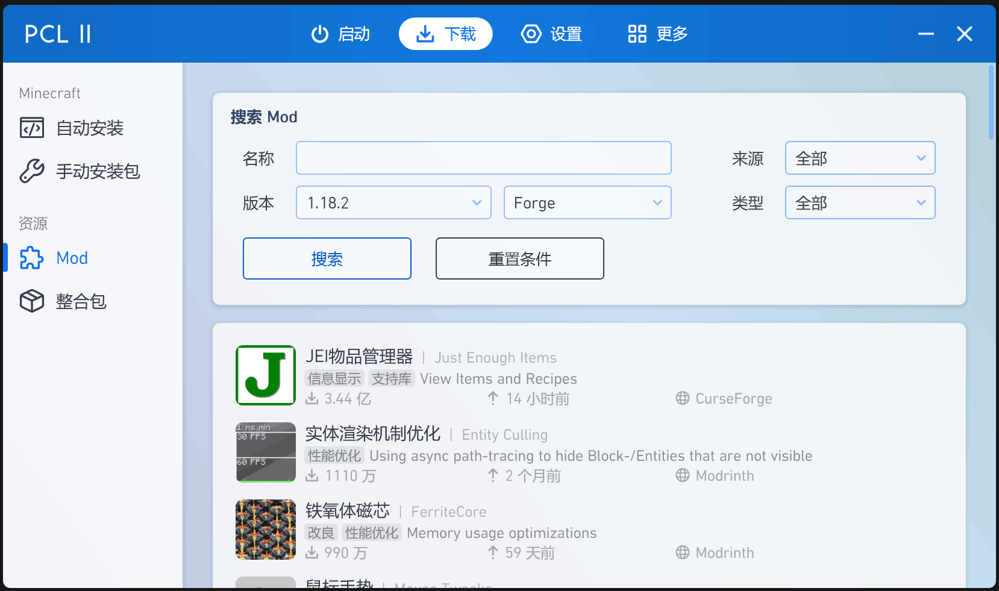点击主页的启动游戏，如果没有java，pcl2会帮你自动下载，第一次启动会久一点
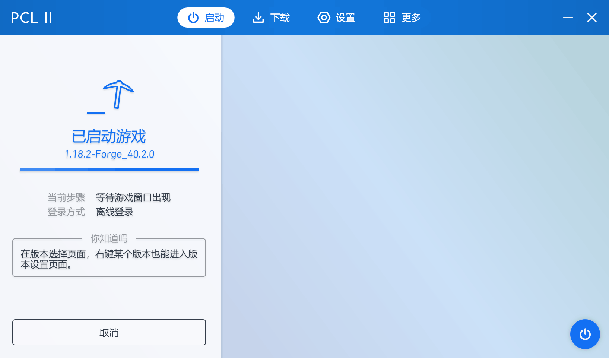进入游戏后，选择多人游戏
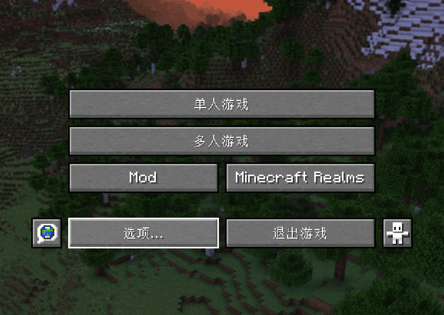如果你只是心血来潮，可以选择直接连接；如果你想以后接着玩，可以选择添加服务器
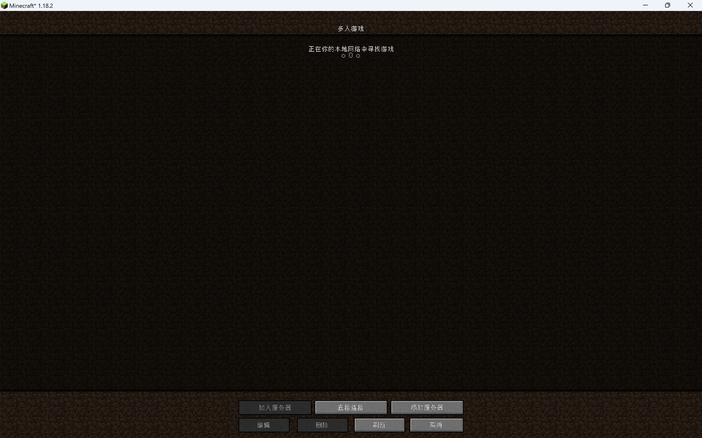填写服务器名称，地址在本站主页，服务器资源包可以选启用，以后每次游玩就不用先选一下了
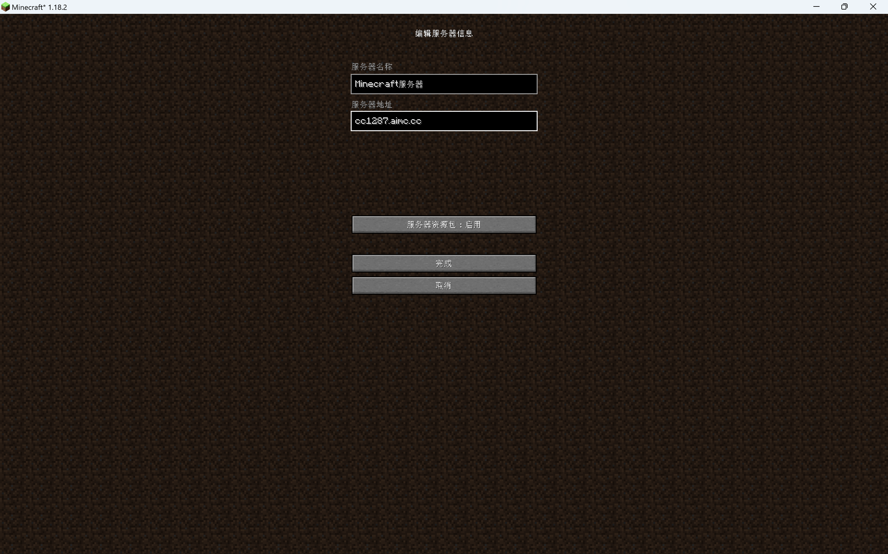进入服务器后输入注册指令，不会底下有指令生成器
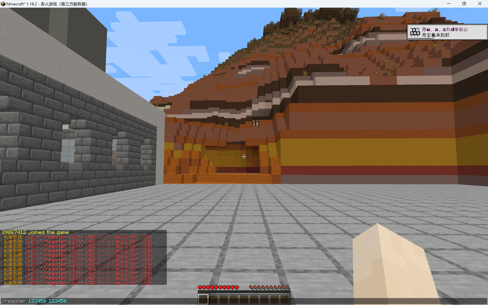指令生成器为你的账号想一个密码，并把它输入在下面的密码框里以后每次登录时请输入"/login"+你的密码